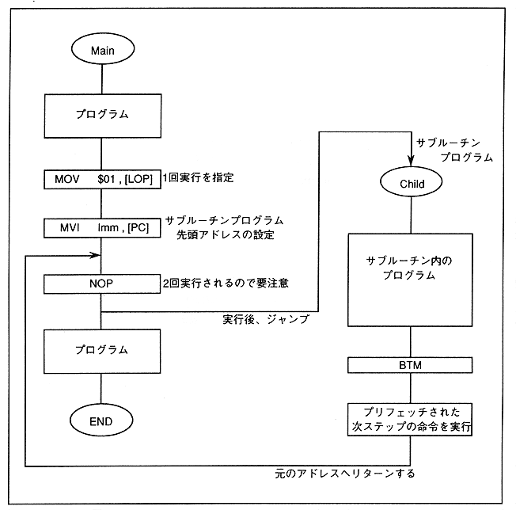

DSP programs (mnemonics) do not have dedicated instructions for subroutine execution. The subroutine is realized in the form shown in Figure 4.4 by combining the Load immediate instruction to [PC] and the LOOP BOTTOM instruction.
Figure 4.4 Subroutine program execution
